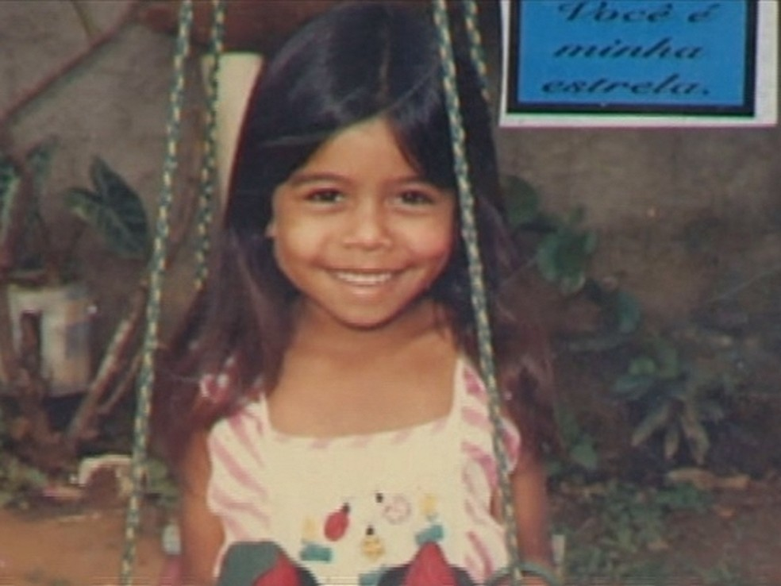
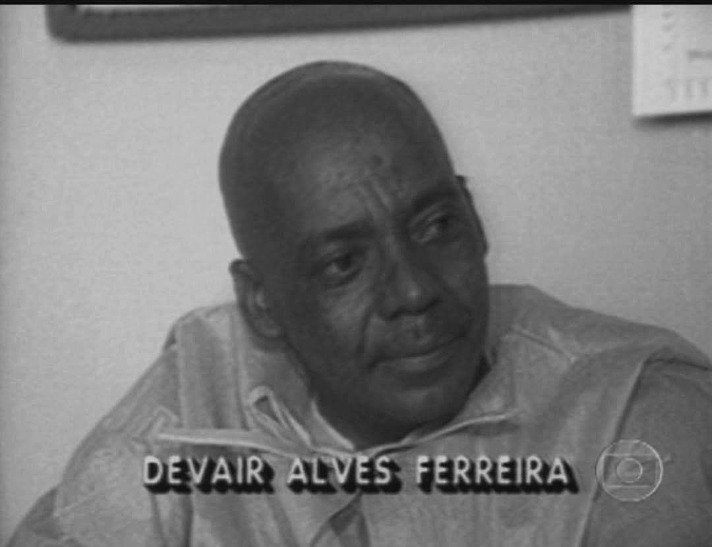

Em 1987 o mundo ainda superando o desastre de Chernobyl, e pensávamos que isso era uma realidade muito distante do Brasil, mas o acidente de Goiânia nos provou que não
Tudo começou quando dois catadores de materiais recicláveis, roberto e Wagner decidem entrar dentro de uma antiga clinica de radioterapia. La eles encontram uma peça alta de larga composta de chumbo e metal, levando para casa de roberto lá eles decidem desmontar parte da peça dentro dela havia um composto químico o césio-137, Wagner segura algumas gramas do pó e coloca perto de seu nariz para ver se identificava o que era aquilo, mesmo não sabendo o que era continuou o trabalho. 5 dias depois eles a levaram para o centro reciclável de Devair onde iriam receber 1500$ pela peça.
Alguns dias depois Wagner teve alguns sintomas como diarreia, fraqueza e logo após roberto com a queda de cabelo fraqueza e o constante fechamento de seus olhos
2 trabalhadores do centro de reciclagem conseguem desmontar totalmente a peça, onde a colocaram em uma das prateleiras do local. A noite enquanto fumava um maço de cigarro Devair percebe algo diferente entre as prateleiras, um brilho diferente e azulado, então decide ir até lá para ver de perto o que era, ficando encantado com tal coisa decide ir mostrar para sua esposa, Maria Gabriela e também ficando maravilhada com aquilo Devair promete fazer um anel daquilo para ela.
Virando uma atração o casal decide mostrar aquilo para vizinhos, amigos, e parentes sem mesmo desconfiar do perigo; Dias depois recebendo a visita de seu irmão Odesson, Devair mostra aquilo para ele, o aconselhando Odesson diz que aquilo não tinha consistência ou que não prestava, muito apegado a peça Devair decide não o escutar. Sentindo os mesmos sintomas de Wagner e roberto incluindo a perda de paladar , seu irmão o aconselha de novo dizendo que a culpa poderia ser da peça, e Devair desmentindo diz que foi da feijoada que havia comido no domingo. 
No dia seguinte trabalhando como motorista de ônibus odesson acaba infectando centenas de pessoas.. Convidando mais um de seus irmãos, Ivô, Devair decide mostrar sua descoberta para ele, ficando impressionado Ivô decide levar algumas gramas daquele pó, dentro de uma caixinha de fosforo, para mostrar a sua esposa e crianças; chegando lá apresenta a novidade para sua filha caçula, Leide de apenas 6 anos ficando impressionada começa a brincar com aquele pó, quando sua mãe Lourdes a chama para jantar não tinha lavado sua mão e acaba ingerindo parte do pó que estava brincando. Dias depois sentindo os mesmos sintomas acrescentando febre e suor constante Leide estava sentindo o efeito da doença causada por ter ingerido um componente radioativo.
Maria Gabriela preocupada com a situação da família decide conversar com sua amiga Santanna, e ela dizendo que desde que aquela peça chegou em sua casa todos começaram a passar mal,
Maria Grabriela e um empregado do centro de reciclagem levam aquela peça enrolada em um saco plástico dentro do ônibus ate o hospital onde possuía o serviço de defesa sanitária. Chegando lá ela apresenta a peça para um médico que acaba a deixando numa cadeira no pátio e cada vez mais infectando pessoas.
Desconfiado que aquilo poderia ser radioativo o médico decide ligar Walter Mendes o físico da secretaria de saúde e também para comissão de energia nuclear, também sendo avisada sobre a suspeita. Walter Mendes se aproximando da casa da família de Devair decide medir o nível de radiação, quando o aparelho aproxima de Leide ele aponta o alto nível de radiação na menina. Retornando a casa de Devair, Walter deu o alarme sobre o risco de radiação onde o diretor da comissão nacional de energia nuclear chega à cidade a noite e convoca os órgãos públicos do estado e decide realizar uma operação de emergência.

De madrugada pessoas são retiradas de suas casas e levadas para o estádio olímpico de Goiânia onde foi feito a triagem de separação das pessoas que precisavam ser internadas ou não, entre as que precisavam estava Leide e seu pai Ivô. No dia seguinte as áreas contaminadas foram isoladas e sua maioria trabalhava policiais que não estavam devidamente protegidos e também foram infectados. Nessas áreas foram recolhidas roupas, e objetos, pertences pessoais no geral, ate um animal foi sacrificado por esta contaminado. Dias depois mais de 102 mil moradores de Goiânia foram ao estádio para medir o nível de radiação presente no corpo. Dias depois os pacientes que estavam internados foram transferidos para o hospital naval Marcilio dias no rio de janeiro entre esses pacientes estavam Devair, Maria Gabriela, Ivô e sua filha, Leide. Maria Gabriela precisou cortar os cabelos e tomar vários banhos de descontaminação, eram cerca de 10 banhos por dia.
Leide cativou todo o país recebendo diariamente presentes de muitas pessoas. Infelizmente em alguns dias Maria Gabriela e Leide acabam falecendo e seus corpos tendo que serem colocado dentro de um caixão revestido de chumbo para não contaminação pela terra, durante o velório houve muita revolta por parte da população onde eles jogavam pedras, pedaços de cruzes nos caixões e nas pessoas, por medo de serem contaminados e também por revolta de muitas vezes não
sabendo a real situação da população de Goiânia. Leide foi enterrada ao lado de sua tia Maria Gabriela, dias depois dois funcionários do ferro velho (Israel e Odílson) faleceram e também sendo sepultados no mesmo lugar. 1 mês depois ivô recebeu alta do hospital, mas infelizmente acabou falecendo pelo excesso do uso do cigarro e gerando sua depressão. Devair falecendo em decorrência do alcoolismo faleceu 7 anos depois.
Em julho de 1992 5 anos após acidente os donos da clínica: Orlando Teixeira, Criseide dourado e Carlos bezerra foram condenados de homicídio culposo.
Durante 10 anos o lixo radioativo foi armazenado em um lugar provisório no município de gaias, e em julho de 1997 ele foi transferido para um deposito subterrâneo onde está abrigado cerca de 13 toneladas de materiais contaminados que hoje em dia e monitorado por um centro de radiação em Goiânia.
Ao todo 600 pessoas foram vítimas do césio-137, 3 faleceram de severa contaminação com o químico e outras 59 faleceram de complicações com a doença que a foi causada
Essa história nos diz que a falta de conhecimento/ informação, nos trouxe erros irreversíveis
“Eu me apaixonei pelo brilho da morte- Devair”
“Eu estou pisando em cima do nosso passado- pessoa não identificada” frase dita em relação aos pertences enterrados em decorrência da contaminação
realizado por: Maria Fernanda / exurrada de bits Cefet-mg
redes sociais
:
instagram